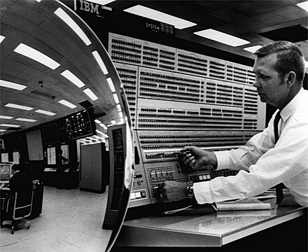
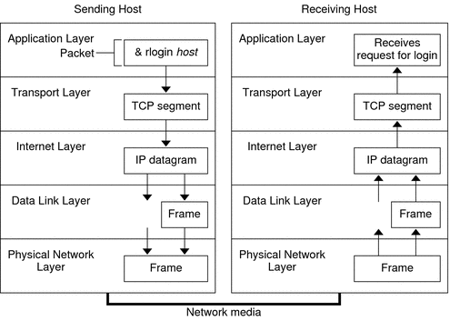

Brief History of the Internet/HTML
-
1965
Two computers at MIT Lincoln Lab communicate using packet-switching technology.
-
1974
The first ISP with commercial version of ARPANET, known as Telenet.
-
1982
TCP/IP becomes dominant protocol for ARPANET
Allows one computer to talk to another computer via the Internet through compiling packets of data and sending them to the right location
 -
1983
DNS system established
- Provides a way to map a name to an IP address.
- Can enhances security by stopping attacks before they hit your machine
- Better uptime with primary/secondary connection options for a request
-
1990
Tim Beners-Lee, develops HTML
- Intended to provide simple structure to documents
- Aimed to be easy to use for academics and scientists
- Allowed linking to documents, which was a biggie
-
1993
World Wide Web (WWW) launches in the public domain and Mosaic browser launched.
First freely available browser (Unix, the Commodore Amiga, Windows and Mac OS). It inspired the birth of Netscape Navigator. Mosaic’s technology went on to form the basis of Microsoft’s Internet Explorer. -
1996
This Happened: one of the first viral videos
-
1997
ECMA releases an official standard for ECMAScript, based off the work being done with Javascript.
-
1998
XML Version 1.0 - used to transfer data and messages between systems
-
2004
Web Hypertext Application Technology Working Group (WHATWG) Founded Representatives from Mozilla and Opera. Pushed innovation outside of W3C's slow and rigid progress
-
2014
HTML5 formally made a recommendation by W3C, adding many new elements, expanded multimedia support, attributes, apis, and access to native features.